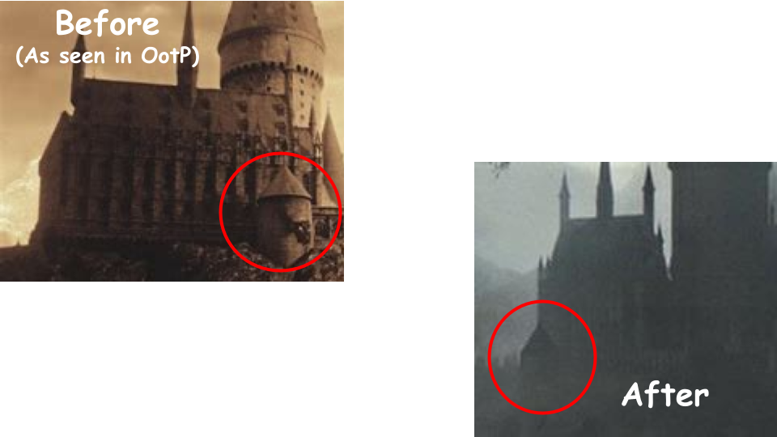

Goblet of Fire
Harry Potter and the Goblet of Fire's version of Hogwarts is very similar to the one seen in Prisoner of Azkaban, as this is the movie with the fewest changes to the school and grounds as a whole. In fact, a mistake was made where during the second task of the Triwizard Tournament, the Prisoner of Azkaban version of the school can be seen in the background. Nonetheless, there are still several notable changes seen in this movie.
The most significant change in this movie is the change to the front of the Great Hall. The smaller building in front of it, known as the Chamber of Reception, was replaced with the Viaduct Coutyard that also includes a clock, as seen next to the yellow arrow. A third tower, circled in red, was added to the front. The Great Hall was also lowered to sit at the same level as the new courtyard.
Another change to the Great Hall is the redesign of the tower found in the back of the building. It was likely changed to better fit the various stylistic changes of the castle.
In addition to the Great Hall changes, the Owlery, as well as the pathway leading to it, was added behind the castle near the Clock Tower in an area where previously there was only a hilly landscape.
For the interior changes, we can see that more alterations occur in the Entrance Hall. The window was raised up a bit higher from the ground, and the room was made slightly larger, likely due to the fact that the Viaduct Courtyard was added, allowing for more room to be added. This made space for two extra torches to be added on either side of the window. In addition to this, large gates were added to enter the courtyard, replacing the previous doors.
In the Great Hall, an extra longer platform was added to make room for tables for the Triwizard Tournament officials to sit. The tables were removed after this movie, but the platform remained.
Next, the Defense Against the Dark Arts classroom had a new window added to it in the front of the classroom.
Finally, we can see some changes in Dumbledore's Office. The shelves originally seemed to have a gated door, but now it uses glass. Also, the pensieve cabinet was added.